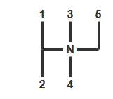
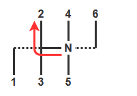
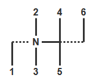
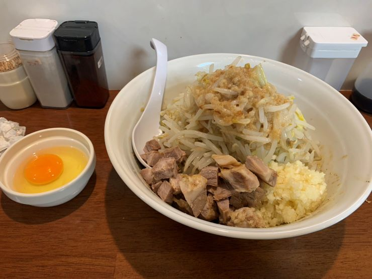

今日も技能1コマだけ。
技能教習 2時限目
理屈や仕組み、背景などを根拠に説明してくれるタイプの教官だったので、非常にわかりやすかった。
名前見たときに気付いたけど、この人、学科教習でも印象に残っていた人だわ。
教習項目以前の部分
前回教えてもらえなかったっぽい、基本的な部分を追加で
エンジンを掛けるのは、グロープラグの余熱表示灯(コイルみたいなマーク)が消えてから
発進時は前方、左右、左右後方に加え、車内の安全確認も行う
前回疑問だったところを質問
エアブレーキ
仕組み上、効き始めるまでが遅く感じる
遊びのエリアを潰しておくイメージで、さっさと少し踏んだ状態にしてしまうのが良い
エアブレーキだと低速からのブレーキコントロールは難しいので、もう少しスピードを出して練習した方が良い
加えて、そもそもブレーキペダルに踏み換えて構えるタイミング、踏み始めるタイミングが遅いとのこと。他人より早いタイミングで踏むタイプだと思っていたけど、全然甘かったな……
クラッチペダルまでの距離
むしろ前回より前に座るよう指示された(!)
思ったよりは慣れてきたけど、そのあと自分の車に戻ったとき、深く考えずにクラッチつないだら想像より早くつながってしまいビビったｗ
っていうかアレだよね、教習所によっては路線バスと観光バスが技能教習のたびにランダムに割り当てられるところもあるわけだし、環境は恵まれている方だよね。いや、むしろ本来は常にいろいろな車種・設定でも乗れるようになれって事だろうか。
スイッチ類
ハザードは左レバーを手前に引く(普通車のウォッシャー方向)
ワイパーは左レバーをひねる(普通車のリアワイパー)
あ、シフトパターンプレート見ようと思っていたの、忘れていた。
その他アドバイス
ハンドル回すときに座席から肩が離れてしまっているので、ハンドルはもっと手前で良い
第二関節くらいまでか
時計の9時15分の位置でハンドルを持ったときに、肘を曲げてお盆を持っているイメージ
あと、内掛けハンドルにならないよう注意
5. 時期を捉えた発進と加速、目標に合わせた停止並びに路端における停止及び発進
まず、「尻振り」とか「リア・オーバーハング(の振り出し現象)」とか呼ばれているものについて、三角コーンを使って実演してもらった。
車体で後輪より後ろにある部分が、例えば左に曲がるときに逆方向の右側にはみ出す現象のこと
何も考えずにハンドルを切って曲がっていくと、80cm(!) 位ははみ出す
なので、左折するときに右側のレーンを直進している車両とか、右折するときに左後ろにいる原チャリとか、そういうのにぶつかる可能性がある
知識としては知っていたけど、曲がる方向と逆側の安全確認をする必要があるのにまだ慣れない。
検定課題練習: 路端停止
そして、もう課題である。俺、まだ大型バスをトータル15分くらいしか運転してないぞ。
路端の左いっぱい(30cm 以内)に沿って車を止めたあと、前方にある障害物を右に避けていく課題。ハンドルを早く切りすぎるとリア・オーバーハングが左のガードレールとか(を模したポール)に当たってしまい、逆に切るのが遅いと前方の障害物を避けるほどは右に出られない、というもの。
どうせ同じだけ尻を振るなら、さっさと序盤に振って時間を稼いだ方がその分多く右に出られる
振り終わったら、それ以上近づかないようにハンドルを戻し始めること
左後ろがポールにぶつからないかどうか、ミラーだけで無く直接目視でも確認すること
まず、まだ車幅感覚が無くて左にどのくらい寄っているのかがピンとこない。寄せる手前がたまたま交差点になっているコースなので、序盤に寄せすぎちゃっても大丈夫だからやりやすい方だとは思うんだが。
次に、指定の前後位置に止めるのが難しい(前方の障害物までの距離が規定距離になるように、停止位置にカラーポールがある)。まだブレーキに慣れていないせい。
さらに、左後ろがどのくらいポールに近づいているのか、いまいち分からない。正直、11m ある車体の対角線がポールとどのくらい離れているか、ミラーだろうが直接目視だろうが分かる気がしない……
3回か4回やらせてもらって、まぁアドバイスもらいながらなんとなく出来たけど、多分たまたまだな。。
あと、2速発進時、3速変更時のロッド操作が真上、真下なのに未だに慣れなくて、考えながら操作しないとミスる。
6. カーブや曲がり角の通行
路端停止の開始地点に戻るために、都度外周を少し走る感じだったかな。(外回り、内回り両方適度に)
普通に走るだけなんだが、まだ慣れない。しかも補助ブレーキを2回くらい踏まれてしまった (中央線をはみ出して曲がるカーブなのに対向車に気付かなかったので……)。あと、ハンドルも操作してもらった記憶があるが、席立ってやってくれたのかな？
ライン取りのイメージが出来ていないので、カーブ中フェンスが近づいたとき慌てて追加でハンドルを回すことがある
「追加しなくても曲がりきれるよ」って言われるシーンが多かった
瞬間的なフェンスとの距離じゃなくて、バスが今どれくらい曲がりながら走っているか、が意識出来ていないから慌てている
すでに結構ハンドルを切っているなら、そのままでも大きく角度が変わっていくはず
回すにしても、実際のバスの運転手みたいに、じわじわと一定のペースで回せるようにする
前輪が運転席より後ろにあることを意識する
というか、ハンドルを切り始めるタイミングがまだ早いらしく(意識しているつもりなんだが……)、カーブの最接点に浅く侵入してしまうせいで、カーブ終わりに膨らみ過ぎる
曲がり角の縁石と同じ半径で曲がれる車体サイズじゃないので、後輪がアウト・イン・アウトしないといけない
また、特に右左折のときなど、もっとハンドルを回せるのに途中で回すのを止める癖が付いている
ミラーばかり見ているので道に対して平行にならないことが多い
右カーブも左カーブも、もっと左に寄って良い
今でも結構ギリギリに見えていたんだけど、そのうち慣れてもっと近づけるのだろうか
なんというか、大型バスをなめていたというか、もっと簡単に運転出来るもんだと思っていた。中型乗ったことない人がいきなり大型乗ると大変だよ、的な記事はいくつか見ていたんだが、どうせすぐ慣れるだろうという慢心があった。
あとシフトチェンジな。普段 MT 乗っているから余裕だと思ったら、そんなこと無かった。
っていうか、未だに心のどこかで「自分は周りとは違うんだZE」って思っているってことなんだよなぁ。凹んできた。
帰り道
なんか、加減速やシフトチェンジの仕方とか、カーブの曲がり方とかを意識しながら車乗っていたら、「あれ、普段どうやって運転していたんだっけ？」ってなって運転感覚が分からなくなってきた。
あとアレね。大型車はサイドミラー大きくて良いよね。普通車に戻ると小さすぎてビビる。
次回へ備えたメモ
2速発進時のロッド操作は真上、3速変更時は真下
真上・真下で覚えるより、いっそのこと (普通車で言う) 3速で発進して、4速に変更するイメージでやってみるか
ブレーキングの練習のためにも、ストレートではもっと加速する
2速つないだらさっさと3速にする→3速をいつもの感覚より強く加速させる→4速にすることを目指す
教官の模範運転見ていると、普段自分が CX-5 運転しているときの加速より勢いがある
4速にしないときは加速後も3速をつないだままになるけど、その状態で急にアクセル離すと揺れるので注意
ブレーキはもっと手前から軽く踏む
曲がるときはミラーを見過ぎないで前を見る
ハンドルはゆっくり回す
おまけ: シフトパターンプレートを見る
今日は技能1コマだけなので、わざわざ遠出するのも若干面倒な気持ちになる。まぁそれはスケジュール通りで、しばらくは一日 1, 2 コマずつの日が続くのだが。
技能教習 1時限目
学課教習とは違って、1番の項目から順番に習う。基本的なことから習っていかないと運転出来ないので、ある意味当たり前か。
1. 車の乗り降りと運転姿勢
座席の調整の仕方とか。
ハンドルをいったん一番奥にずらす
お尻と背中を座席に押し込む
座席上下の二つは一番上にしておく
リクライニングは 90度に 見えるようにしておく。本当は 105度になるように、とかなんとか
ブレーキペダルを踏みきっても足が伸びきらない位置まで、座席を前に出す
ハンドル頂上に手を伸ばしたときに、第一関節に乗る位置までハンドルを手前に出す
シートベルト
教習用のバスなので、前扉が無くて代わりに教官が座る助手席があるのが面白い。
2. 運転装置の取り扱いと日常点検整備等
運転装置
大半は普通車と一応同じなので、ささっと説明を受けた。
エンジンの起動前・停止後には別途、奥にあるメインスイッチを ON/OFF する必要がある
ON は引っ張る、OFF は左に回しながら押し込む
排気ブレーキ は左のレバーを下に(普通車のワイパー方向)シフトレバーはフィンガーシフト
ドライブ・バイ・ワイヤ になっていて、圧縮空気による変速操作を電気信号で遠隔指示する形になる
シフトレバーが入ってから、ギヤが実際に入るまでに、2秒(!)くらいかかる
あれ、そういえばハザードはどうやるんだ？
シフトパターン
2速発進メインだから偶数段・奇数段が普通車と上下逆なのは良いとして、N の左右の位置がイメージしていたものと違った(と言うか車種によって違うっぽい)。
タイプ
シフトパターン
発進時の操作
普通車

大型バス

大型バス

普通車、一般的なパターン
普段運転している CX-5 もこれ、実際には 6速まであるけど
大型バス その1、知っていたパターン
点線はロッド操作が重くなるところ
1速はエクストラロー扱いでほぼ使わないから無視すると形は同じだし、2速発進時に左、上、と操作するのも同じなので、普通車との実質的な違いはない
大型バス その2、知らなかったパターン
パターンの形自体はその1と同じだが、N の位置が違うため、発進時の操作も変わる
教習車はこちらのタイプだった
発進時に真上に押し込むことになるし、そのあと3速にチェンジするときも(左下では無く)真下に押し込むのだが、まだ慣れない
手癖で左に押してしまい、1速(とR)の方に入りかけるのを何回かやった
R(リバース)についてはいくつかパターンが細分化されるので上の表では省略しているが、大型車の場合は大体左上
ところで、シフトパターンプレート見ても N の位置は書いてなかった気がするんだが、その1とその2の違いはどうやって判断すればいいんだろうか。
日常点検整備
一回降りて車体を回りながら、バスならではのポイントを中心に。トラックについても軽く。
ディーゼルエンジン由来のポイント説明のときに、「自分が普段乗っているのもディーゼルなんですよ」って言ったら少し驚いていた。MT乗っているって言ったときには響かなかったのに、意外だｗ
3. 車両特性に基づく運転死角と車両感覚等を理解した運転操作
死角とかは、あんまり説明されてないかも。
車体高さの話はあった。「あの可変ゲートくぐれると思う？」「目視の感覚、結構当てにならないでしょ。」とか。あとは、そもそも自分の車の高さを知っておくことが大事というのと、トラックの場合だと荷物のせいで日によって高さが変わることもあるから要注意だ、とのこと。
4. 基本的な運転操作
そして、実際に運転。わりといきなり運転させられる感じで、「あれ、説明終わり？アドバイスとか無しでいきなり発進なの？って言うかバス、でかくね？」って思ってしまった。
残り時間もそんなに無かったから、多分 10分～15分くらいしかやっていないと思うんだけど、めっちゃ疲れた。終わったあと自分の車で帰りたくないと思う程度には、疲れた。
クラッチペダル
思ったより手前まで戻さないとつながらなかった。おかげで、半クラのときに下記シフトチェンジミスと勘違いしやすかった。
シフトチェンジ
何回かミスった。シフトレバーを2秒くらい押しっぱにしないと入らないのだが、いつもの癖ですぐ手を離してしまう。
あと、2速つながったらすぐ3速にする。って言うか 3速でもめっちゃトルクある。昔ぼむ者＠ が「バスは低速トルクの化け物だから」って言っていたが、20年越しに体で理解した。
ブレーキ
これが一番ヤバい。エアブレーキ 、マジで慣れない。
教官に、効くまでに時間が掛かるように感じる仕組みを聞いておきたい。ペダルの遊びが大きいだけなのか、効くまでの時間に遅延があるのか。
正直、街を走る路線バスを見る目が変わったよ。よく、あんななめらかに加減速出来るなぁ。
次回は、直線後のカーブ手前で、毎回減速の練習をするべき。そのためにも、直線では速度を上げる。
車幅感覚
正直、シフトチェンジとブレーキに精一杯だったので、あまり見られていない。
直線は、ちゃんと左右のミラーを見ないとダメかもしれない。普段よりかなり中央線に近いところを走っているつもりだったのだが、何回か「少し左に寄っていますね」って言われた。
内輪差
ホイールベースが長いので、内輪差も大きい。
さらに、運転席は前輪より前にあるので、ハンドルを切るタイミングはさらに遅い。
交差点では気をつけてゆっくり曲がるから、まだなんとかなりそう。はみ出しまくってから曲がるイメージも元々持っているしね。
ヤバいのは外周のカーブ。ある程度スピードがあるから確認・判断する暇が少ないし、そもそも普段は普通のカーブで内輪差は意識していないから気付きにくい。
おまけ: 教官による鋭角
教習車両を停めておく場所が鋭角 の中だったので、最後教官がそこにバスを戻すときに、 鋭角での切り返しを実演してくれた。狭い道で120度ターンする、二種免許取るのに必要な課題の一つね。
……理屈は分かっていたよ？タイヤが縁石を踏まなければ車体が芝生の上にはみ出しても良い。普通車はタイヤの後ろに運転席があるが、バスはタイヤより前にあるから、運転席ごと芝生の上に飛び出すことになる。うん、知識としては理解していた。こんな動画も見たことあるしね。
VIDEO
でも、実際に体験したらマジ意味不明で面白かった。
って言うか、鋭角に入るための右折の時点で芝生にはみ出しながら侵入していったのだが、それだけで謎の感動があったわ。
夜飯
今日は 18:10 終わりだったので、前回候補に挙げつつも営業時間的に行けなかったらーめんしょっぷ中吉 へ。具体的な数字は思い出せないが、こっちも八年ぶりくらいな気がする。って言うかいつの間にか移転していた。
牛すじぶっかけ(温かい麺)＋ニンニク。
今日は学科のみを5コマ。第1段階の学科の残りをいっぺんにやっつけた。
学科教習 3時限目 4
一種の範囲については、知っているはずだよねと言うことで複数の項目をいっぺんにやるため、かなり駆け足。とは言え、もう覚えていないこと多いと思うので復習してくれるだけでもありがたい(一種の範囲の学科があるかどうか、知らなかった)。
8. 歩行者の保護など
早速、覚えていないこと多数。
安全地帯と路面電車の絡みとか、マジで一ミリも覚えていない
菱形(◇)のマークは横断歩道の 50m 前と 30m 前にある、なるほど
横断歩道の近くの停止車両の側方を通るときに一時停止するとか、通学・通園バスのそばを通るときは徐行して安全を確かめるとかも、なんとなくは分かるけど実は対向車線のときも該当するって言うのを聞いてびっくりしたり
9. 安全の確認と合図、警音器の使用
何かしようとするときは以下の手順。いきなり合図ではない点に注意。
安全確認
合図
もう一度安全確認
行動
あとは、どういう場合だと合図のタイミングが 3秒前なのか、それとも 30m 手前なのかとかは、ちゃんと覚えないとまずそう。
10. 進路変更など
まぁまぁ分かることばかりだったかな。黄色の線を越えて進路変更してはいけない、とか。
11. 追い越し・行き違い(前半)
細かい話がたくさんあって、ここもちゃんと覚えないとまずそう。
学科教習 4時限目 5
前のコマと同じく、駆け足で一種の復習のような形。
12. 追い越し・行き違い(後半)
行き違い、坂道は上り優先とだけ覚えていたけど、片方が崖のときは崖側が止まるのね。完全に忘れている。
13. 駐車と停車
まず、駐車扱いなのか停車扱いなのかは地味に細かいので、条件を覚えないとまずい。
駐車・停車禁止の場所、その例外
駐車のみ禁止の場所、その例外
無余地駐車禁止の場所、その例外
上京後との、正しい駐車・停車の方法
14. 乗車と積載、けん引
方法についてはなんとなく覚えていたからともかく、制限についての具体的な数字類は丸暗記が必要かな。
15. 交通事故の時
故障車をロープでけん引するときのいろいろなルール。地味に複雑。
学科教習 5時限目 6
ここでがっつり二種の話になった。
16. 旅客自動車に係る法令の知識
まぁルール自体もいろいろあって大変なんだけど、以下の話が特に印象に残った。いやぁ、二種って大変だわ。
仮に他の車や歩行者が危険な行動に出たとしても、交通事故を避けられるよう、慎重に運転する
学科教習 6時限目 2
また一種の範囲。
2. 信号に従うこと
まぁなんとなく覚えている話メインだったかな。警察官による手信号とかも含めて。
3. 標識・標示などに従うこと
標識・標示を覚えましょう。たくさんあるけど、なんとなく分かるやつばかりだから、なんとかなるかな。
4. 車の通行するところ、車の通行してはいけないところ
まぁまぁ普通だったかな。テストでは "自動車" と "車" の違いとかで引っかからないようにしたい。
一点、軌道敷内通行可の標識があっても、後ろから路面電車が近づいてきたときは速やかに軌道敷外に出るか、十分な距離を保つようにしなくてはいけない、って言うのは完全に忘れていた。
学科教習 7時限目 3
引き続き一種の範囲。
5. 路線バスなどの優先
いくつか意外だったところがあった。
緊急自動車を譲るとき、交差点付近以外では一時停止しなくても良い
また、一方通行以外では基本的に左に寄る事になっている
専用通行帯指定道路、右左折などのときには入って良い
優先通行帯指定道路、バスが近づいてきたときは出なくちゃいけないが、混んでいて出られなくなる恐れがあるときはそもそも入ってはダメ
6. 交差点などの通行、踏切
交通整理の行われていない交差点の通行方法、条件が多段式でややこしすぎるので分けて覚えないとまずい。
あと、以下のような日本語の違い、言われてみると当たり前なんだけど的な難しさがあるので注意。
(普通の道路で) 右折するときは、あらかじめ道路の中央 に寄り、交差点の中心のすぐ内側 を徐行
一方通行から右折するときは、あらかじめ道路の右端 に寄り、交差点の中心の内側 を徐行
7. 安全な速度と車間距離
まぁ分かる話ばかりだったかな。
約三ヶ月ぶりに訪問。長かったぜ。
事務関連
入所手続き、説明(続き)
主に、前回説明が終わらなかった、予約当日の受付方法やキャンセル待ちの方法などを聞いた。
押さえてもらった教習スケジュールの確認
学科はがーっとなるべく少ない日数で、技能はほとんどの土日それぞれ 1, 2コマずつ、9月まで埋まっているって感じだった。大変だ。
免許取得関連のルールを質問
入所してから卒業するまでの間に、(別途免許センターで一発試験を受けるなどして) 所持免許が増えても問題ないか、について念のため確認した。
最初、軽い感じで「問題ないですよ」と回答してもらったが、「教育訓練給付制度の絡みもあるので、ちゃんと確認をお願いします」って言ってまた偉い人に確認してもらった結果、ダメだとのこと。
入所後だとしても、所持免許に合わせたカリキュラム変更を行う必要がある
別の二種免許を持っていれば二種学科が免除になる、など
多く受ける分には問題ないかと思ったが、そうでは無い
その結果、教育訓練給付制度で申し込んでいた指定講座では無くなってしまうので、大型特殊二種を受けるのは卒業後とすることにした。
(偉い人、副所長さんが何人か居るみたいなんだけど、前回の人とは違って大分感じの悪い人だった……)
ランチ
ランチマップ見て一番気になった近めのうどん屋は日曜日定休、しょうが無いから最寄りのファミレスかなと思ったらまだお昼前なのに長蛇の列、って事で少し歩くけど安そうなうどん屋さんに向かった。
四ツ木製麺所 | 食べログ
お店の名前も看板もうどん屋さんなのに、いざ入ったら中身は居酒屋でビビった。
うどんは結構美味しかったです。
教習 0時限目 適性試験
パソコンでシミュレーションとか記憶力クイズとかやった。テンキーだけしか使わないようになっている。
結果は今度貼る。
「事情があるときは駐車禁止もやむを得ない。 1.はい 2.どちらかと言えばはい 3.どちらかと言えばいいえ 4.いいえ」みたいな質問に答えて、自分の性格を分析してくれるやつ
等速で動く物体が建物の陰に隠れたあと、建物の反対側から飛び出すタイミングを予測してボタンを押すやつ
画面に映った写真を10秒くらいで覚えて、そのあと「交差点の信号はどうでしたか。 1.青 2.赤 3.信号は無かった 4.覚えていない」みたいな質問にいくつか答えるやつ
25分くらいで終わった。って言うか、結果を見てのフィードバックは別のコマなのね。
学科教習 1時限目 先行1
教官とサシ。流石にいろいろ会話が発生するので、飽きずに終わった。
1. 第二種免許の意義
意味とか理由とか実態とか求められる資質とか。あんまり教科書通りにはやらなかった。
以下が印象的だった。
バスやタクシーの運転手は天候を選べないので大変
代行運転自動車標識は、客の車に貼る必要があるが、ほとんど守られていない
学科教習 2時限目 7
ファンキーなおじいちゃん教官。教科書は嘘ばっかだからって言って、ずっと別の話していた。
そもそも、スマホとかをいじらずに人の話を一時間聞くという体験が久しぶりなので、果たして耐えられるのかが不安だったのだが、そもそもそのような状況にはまだなっていないな。
17. 身体障害者などへの対応
最初に、中でやるか外でやるかどっちが良いかを聞かれた。いや、こっちは何をするのか知らないし、中と外の違いも分からないので、答えられません。。。
授業を聞いていて、車椅子な人くらいなら想像出来ていたんだけど(それも覚悟は足りなかったことが分かったが)、聴覚や視覚が不自由な人とかもそれぞれ適した対応が必要で、正直自分にはバスやタクシーの運転手は無理だな、と思ってしまった。
あと、介助方法に答えは無い、というか人ごと・日ごとに違うから、何を手伝ったら良いのか毎回その人に確認することが一番大事とのこと。
そういえば、クレーン学校が併設されているからって、吊り角のことを教えてもらった。
ただ、車椅子の実習やるっぽいこと言っていたのに、結局やらなかったのでちょっとしょんぼり。
夜飯
陽はまたのぼる とからーめんしょっぷ中吉 とかに寄って帰ろうかなと思っていたが、教習終わったのが 16:00 と中途半端な時間だったので、どちらも営業しておらず。ラーメンむねや に行ってみた。移転後に一回行った程度だから、八年ぶりくらいか？

ぶっかけ(汁なし)中+生玉子、ニンニクとアブラ多め。
入所手続き、説明
料金の振込も済んだので、入所手続きしてきた。(これが初訪問)
が、エラい時間掛かってしまい、半分も終わらなかった。事前の電話では「手続きに一時間くらい掛かるので、閉所の一時間半前くらいまでにお越しください。」とのことだったので、二時間前には訪れていたのだが。
主に、教育訓練給付制度関連の書類が増えていることと、署名を求められたいくつかの書類がいまいちしょぼくて質問しまくったことが原因かな。受付のお姉さんには悪いことをした。あと、偉い人も何回か登場してもらったので、それも申し訳なかった。
教習の予約
混んでて予約が取りづらいというのは事前に聞いていたが、話を聞いた結果、当初の予想より数倍は取りづらいと言うことが判明した。って言うか、「予約は六月まで埋まっています」と「現在予約を受け付けているのは六月分までで、でもすでに埋まっています」じゃ、ニュアンス大分違うと思うんだが……
とりあえず、七月以降の予約を受付次第、良い感じに予約を取ってくれるらしいので、いったん全土日全時間帯 OK で取ってもらって様子を見ることにした。最初は他の予定との兼ね合いとか考えて、土曜日は午前中だけかなとかいろいろ考えていたのだが、期限(教習全体で九ヶ月、仮免で六ヶ月) の心配もあるのでまずは全力で突き進む形を選んだ。
(これ、都度予約のプランの人はいち予約ごとに二、三ヶ月待つって事？期限内に終わらせるの、無理じゃね？)